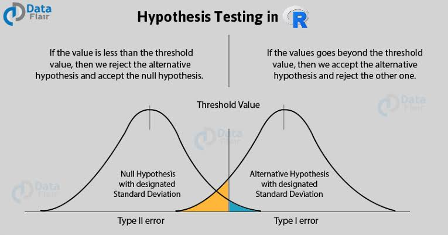

—Statistics related to Data Science—
Statistics
The most important aspect of any Data Science approach is how the information is processed. ... Those possibilities in Data Science are known as Statistical Analysis. Most of us wonder how can data in the form of text, images, videos, and other highly unstructured formats get easily processed by Machine Learning models.
Use of Statistics in Data Science
- Statistical features is probably the most used statistics concept in data science. It's often the first stats technique you would apply when exploring a dataset and includes things like bias, variance, mean, median, percentiles, and many others. It's all fairly easy to understand and implement in code!
- Statistics is a wide concept limiting not just to what exists but what can be derived out of existing techniques to build something new. Hence, Statistics is very important for Data Science as it helps to understand existing solutions as well as digging out new developments.
- Statistics helps in providing a better understanding and accurate description of nature's phenomena.
- Statistics helps in collecting appropriate quantitative data.
- Statistics helps in the proper and efficient planning of a statistical inquiry in any field of study.
Terminology
Probability
Probability is the basic need for understanding the possibilities. To start with let us take a very basic example – What are the chances that Team A is going to win the football match against Team B. To derive this answer, we might require 100 people to give their respective votes – Number of Samples. Based on those votes we can have a chance of which team can win the game.
Rule of addition : P(A ∪ B) = P(A) + P(B) - P(A ∩ B)
Rule of multiplication : P(A ∩ B) = P(A) P(B|A)
Rule of subtraction: P(A') = 1 - P(A)Sampling
The sampling as we discussed in the above example is identifying the right set of people.
There are various types of sampling methods Simple random sampling, Systematic sampling, Stratified sampling, Clustered sampling, etc. Unless otherwise noted, these formulas assume simple random sampling.
1. Sample variance = s2 = Σ ( xi - x )2 / ( n - 1 )
2. Sample mean = x = ( Σ xi ) / n
3. Sample standard deviation = s = sqrt [ Σ ( xi - x )2 / ( n - 1 ) ]
4. Variance of sample proportion = sp2 = pq / (n - 1)
5. Pooled sample proportion = p = (p1 * n1 + p2 * n2) / (n1 + n2)
6. Pooled sample standard deviation = sp = sqrt [ (n1 - 1) * s12 + (n2 - 1) * s22 ] / (n1 + n2 - 2) ]
7. Sample correlation coefficient = r = [ 1 / (n - 1) ] * Σ { [ (xi - x) / sx ] * [ (yi - y) / sy ] }
Hypotheses Testing

Regression

The regression in simple terms is finding out a relationship between the independent and dependent variables. Regression can be of two types broadly – Linear Regression, Multi Linear Regression.
Linear Regression : Y = aX + C
Multi Linear Regression : Y = aX + bX1 + cX2 + …. + C
Statistics is a wide concept limiting not just to what exists but what can be derived out of existing techniques to build something new. Hence, Statistics is very important for Data Science as it helps to understand existing solutions as well as digging out new developments.
1. Simple linear regression line: ŷ = b0 + b1x
2. Regression coefficient = b1 = Σ [ (xi - x) (yi - y) ] / Σ [ (xi - x)2]
3. Regression slope intercept = b0 = y - b1 * x
4. Regression coefficient = b1 = r * (sy / sx)
5. Standard error of regression slope = sb1 = sqrt [ Σ(yi - ŷi)2 / (n - 2) ] / sqrt [ Σ(xi - x)2 ]
Degrees of Freedom
If we know whether to perform some action or not. Will those actions give a positive result or a negative result then we can have an added advantage of doing the right things. Hypotheses Testing gives identifying the situation where the action should be taken or not based on what results will it produce.
There are other tests as well like A/B Testing, Z Test, T-Test, Null Hypothesis with similar relevance.
1. Standardized test statistic = (Statistic - Parameter) / (Standard deviation of statistic)
2. One-sample z-test for proportions: z-score = z = (p - P0) / sqrt( p * q / n )
3. Two-sample z-test for proportions: z-score = z = z = [ (p1 - p2) - d ] / SE
4. One-sample t-test for means: t statistic = t = (x - μ) / SE
5. Two-sample t-test for means: t statistic = t = [ (x1 - x2) - d ] / SE
6. Matched-sample t-test for means: t statistic = t = [ (x1 - x2) - D ] / SE = (d - D) / SE
7. Chi-square test statistic = Χ2 = Σ[ (Observed - Expected)2 / Expected ]
The correct formula for degrees of freedom (DF) depends on the situation (the nature of the test statistic, the number of samples, underlying assumptions, etc.).
One-sample t-test: DF = n - 1
Two-sample t-test: DF = (s12/n1 + s22/n2)2 / { [ (s12 / n1)2 / (n1 - 1) ] + [ (s22 / n2)2 / (n2 - 1) ] }
Two-sample t-test, pooled standard error: DF = n1 + n2 - 2
Simple linear regression, test slope: DF = n - 2
Chi-square goodness of fit test: DF = k - 1
Chi-square test for homogeneity: DF = (r - 1) * (c - 1)
Chi-square test for independence: DF = (r - 1) * (c - 1)